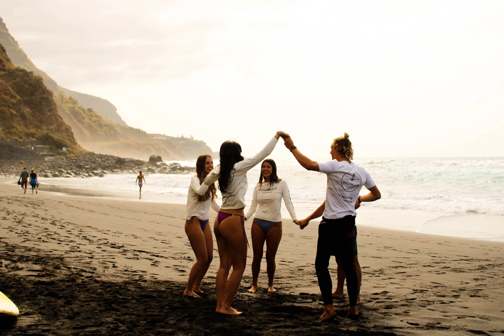
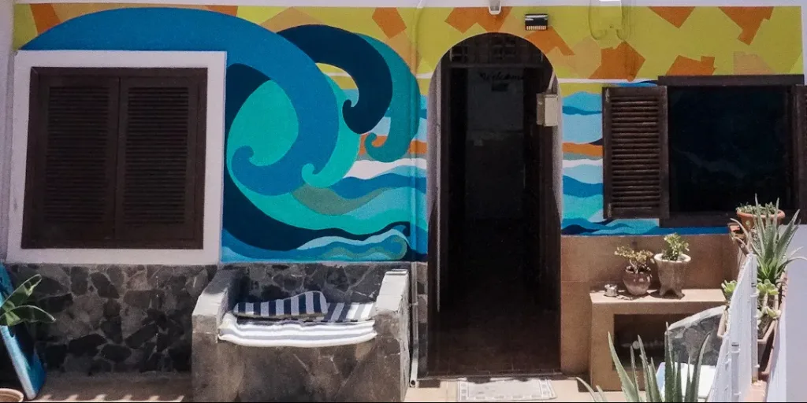
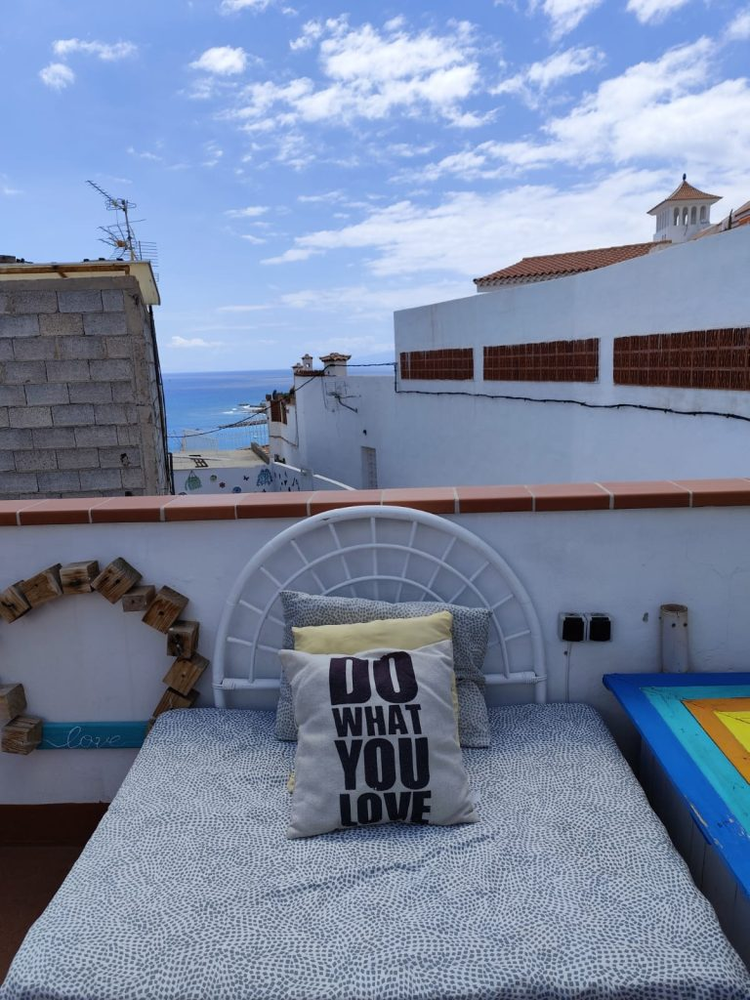
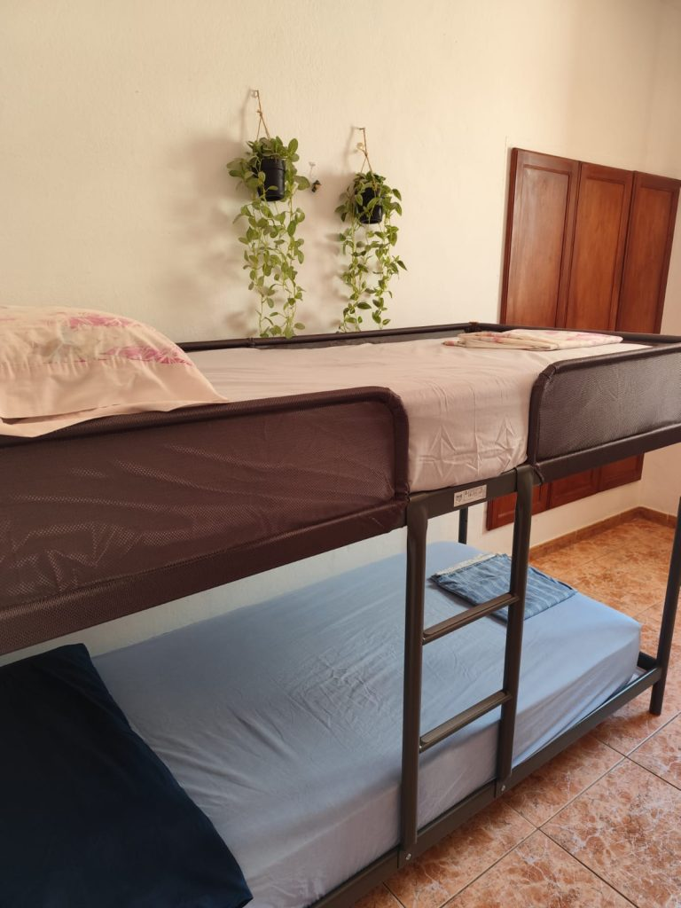
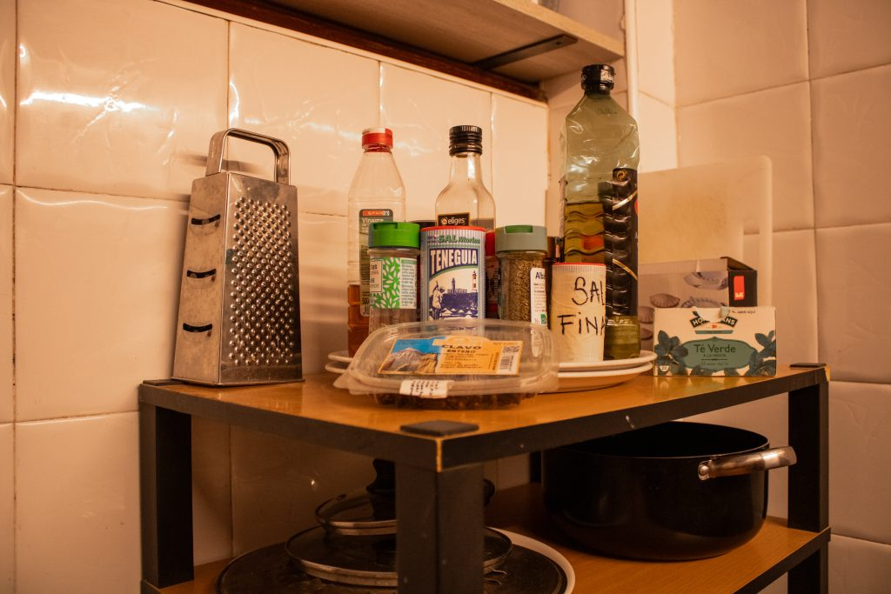
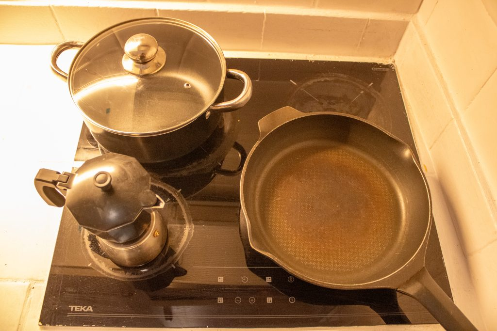
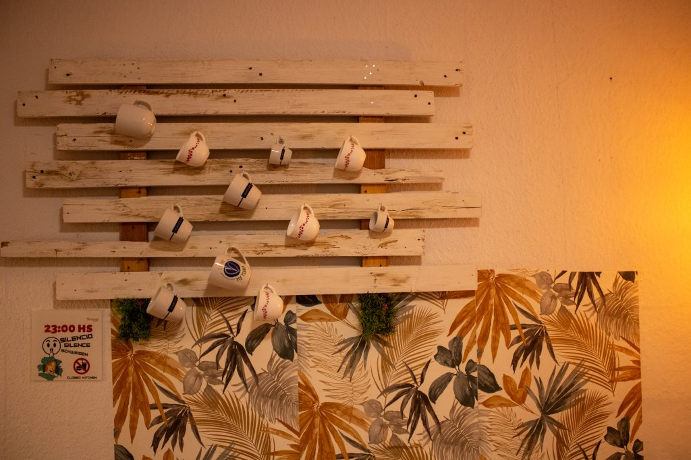
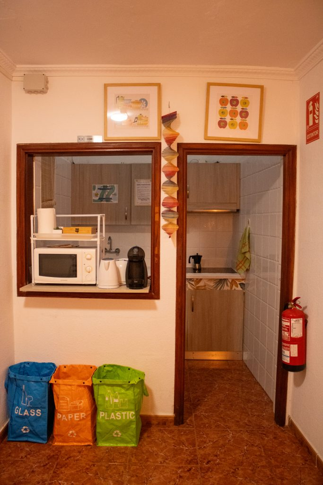
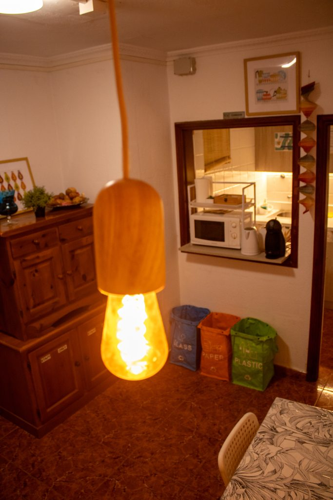
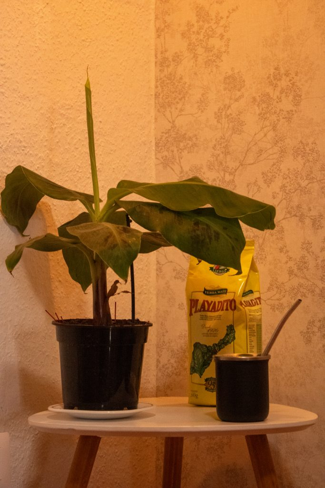
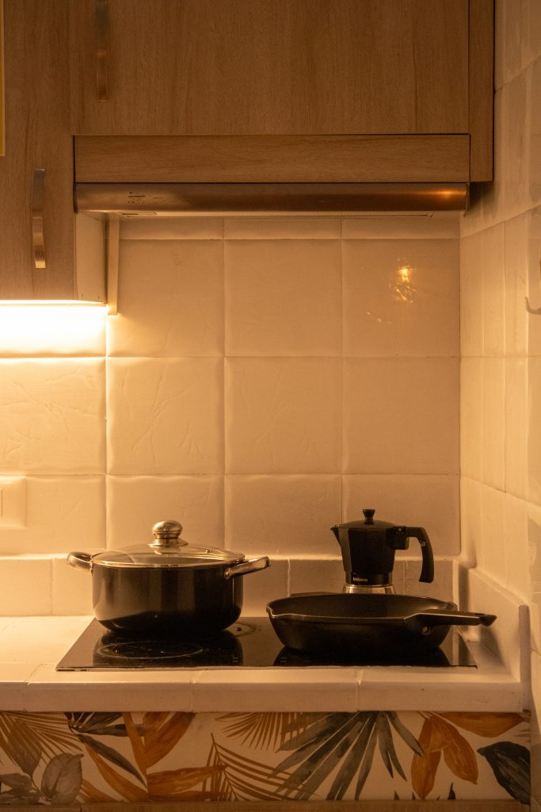
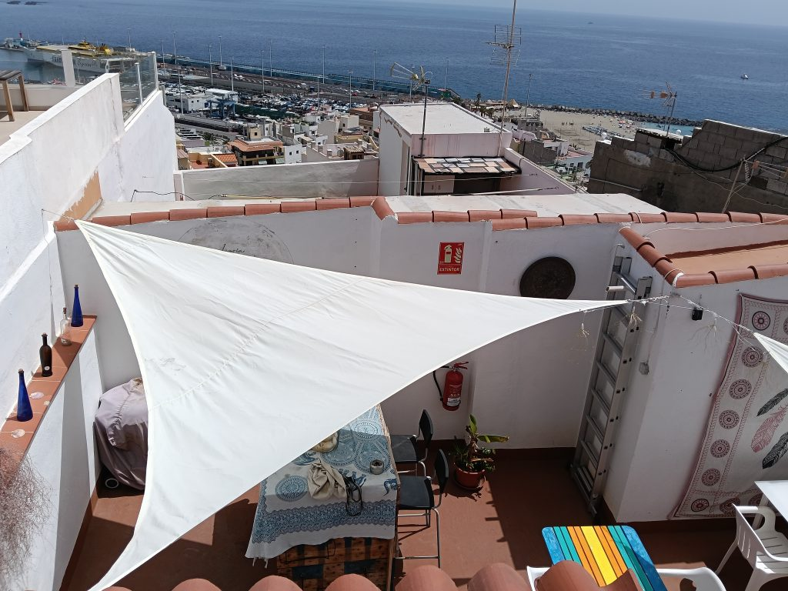
Banana Surf Hostel è un ostello surf nel cuore di Los Cristianos, nel sud di Tenerife, a pochi minuti dalla spiaggia e dal porto. Una sistemazione pensata per chi viaggia cercando comfort, vicinanza al mare e nuove amicizie.
Uno spazio dove tranquillità e socialità si incontrano: l'atmosfera è accogliente e informale, ideale per surfisti, viaggiatori e gruppi che vogliono vivere l'isola in compagnia.
Lezioni di surf e accesso facilitato agli spot della costa sud: la struttura nasce con un'anima surf house.
Attività giornaliere ed esperienze condivise per conoscere altri viaggiatori e vivere l'isola insieme.
Escursioni organizzate, incluse le gite al Teide, per scoprire i paesaggi più iconici di Tenerife.
Transfer in ferry verso le altre isole Canarie, per chi vuole allungare il viaggio oltre Tenerife.
Contattaci per disponibilità e prezzi
💬 Contattaci su WhatsApp